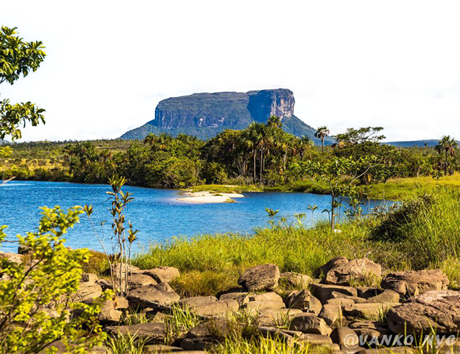
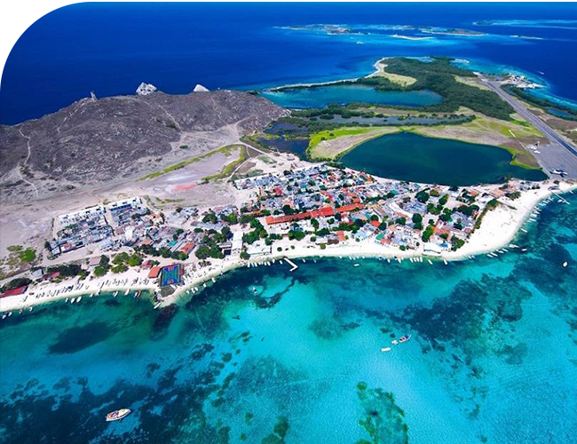
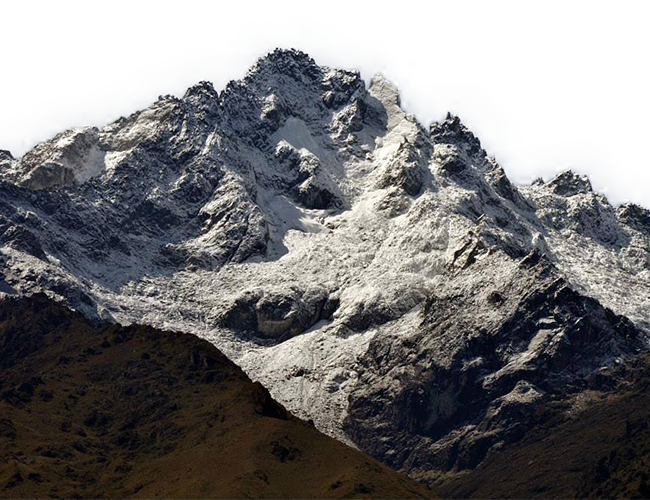
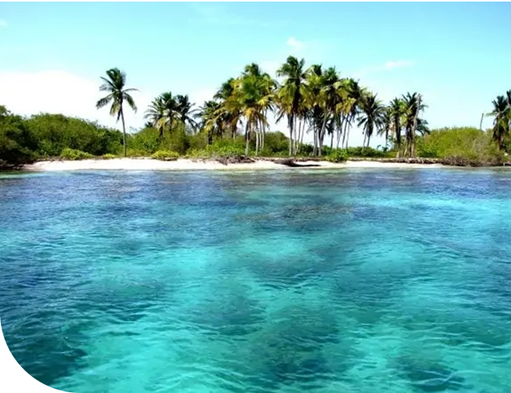

¡Explora la diversidad natural de Venezuela, un destino turístico cautivador
que ofrece experiencias inolvidables en cada rincón! Desde los imponentes tepuyes y cascadas del Parque Nacional
Canaima hasta las playas vírgenes y arrecifes de coral del Parque Nacional Morrocoy y el Archipiélago de Los Roques,
el país ofrece una variedad de paisajes espectaculares. Además, aventúrate en una emocionante caminata hasta la cima
del Pico Bolívar para disfrutar de vistas panorámicas impresionantes de los Andes venezolanos. ¡Ven y descubre la
belleza y la aventura que te esperan en Venezuela!

Canaima
Uno de los parques más grandes y espectaculares del mundo, declarado Patrimonio de la Humanidad por
la UNESCO. Su principal atractivo son los tepuyes, unas impresionantes mesetas de roca que se elevan
sobre la selva y que albergan cataratas únicas, como el Salto Ángel, la caída de agua más alta del
planeta.

Los Roques
Un conjunto de islas y cayos de origen coralino, que forman parte de un parque nacional marino.
Sus playas de arena blanca y aguas cristalinas son perfectas para el buceo, el snorkel y el kitesurf.
Además, se puede disfrutar de la gastronomía local, basada en el pescado y el marisco, y de la vida
nocturna en la isla principal, El Gran Roque.

Pico Bólivar
El punto más alto de Venezuela, con 4.978 metros de altura, ubicado en la cordillera de los Andes.
Se puede acceder a su cima mediante el teleférico de Mérida, el más largo y alto del mundo, que ofrece
unas vistas panorámicas incomparables. El pico Bolívar es también un destino para los amantes del
montañismo, que pueden ascender por sus rutas de escalada y disfrutar de la nieve y el paisaje alpino.

Morrocoy
Otro parque nacional que protege una zona de manglares, islotes y arrecifes de coral en el golfo Triste.
Sus playas son ideales para el descanso y el sol, y sus fondos marinos alberga n una gran variedad de
especies. También se pueden avistar delfines, tortugas y caimanes en algunos sectores del parque.